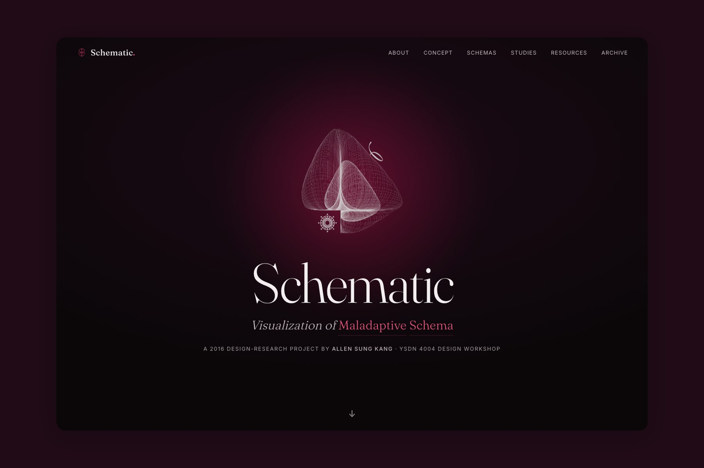

Design Research
A design-research project that translates the 18 early maladaptive schemas from schema therapy into a navigable visual archive, with a private, browser-only self-check. Originally a 2016 workshop, rebuilt in 2026.

The eighteen early maladaptive schemas from schema therapy are the kind of idea that can change how you see yourself, and they are locked inside clinical language most people never reach. Schematic started as a 2016 design-research workshop with one question: what does this taxonomy look like when a designer, not a clinician, is the one who has to make it legible?
Each of the eighteen schemas became a poster, grouped into the five domains they actually belong to, so the structure teaches the map before you read a single definition. The harder call was the self-check. It would have been easy, and wrong, to build a "what's your schema" quiz that turns real pain into a personality test. Instead it reflects rather than diagnoses: eighteen first-person statements resolve into a domain profile, framed as a mirror you hold up, not a label you get handed. It runs entirely in the browser and stores nothing, because material this personal should never leave your device.
I rebuilt the original in 2026 as a proper archive, dated and honest about what it was, wrapped in a lighter learning layer. It holds some of the earliest thinking I still stand behind: that design's real job is often just to make a hard thing reachable.